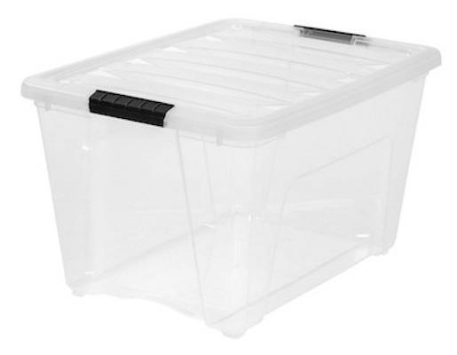

Мы постоянно сталкиваемся с метафорами. Если заглянуть в словарь Ожегова, то окажется, что метафора — это «скрытое образное сравнение, уподобление одного предмета, явления другому». Метафоры помогают нам ухватывать суть новых для нас явлений. Например, виртуальные контейнеры можно сравнить с обычными пластиковыми контейнерами. Такое сравнение, через сопоставление уже известных нам свойств обычных контейнеров со свойствами виртуальных контейнеров, поможет сначала с ними познакомиться, а потом и понять их сущность.
Конечно, пластиковые контейнеры, в отличие от контейнеров Docker, никто вам не будет присылать бесплатно, да и когда вы их получите, они будут пустыми. А вот в контейнерах Docker всегда есть что-то интересное.
Ещё один подход к размышлениям о контейнерах Docker заключается в сравнении их с экземплярами живых организмов. «Экземпляр» — это нечто, существующее в некоей форме. Это не просто код. Это код, который стал причиной существования чего-то большего, чем он сам, чего-то, образно говоря, живого. Как и другие живые организмы, экземпляры контейнеров появляются на свет, живут и умирают.
Контейнеры Docker можно сравнивать не только с обычными контейнерами или с живыми организмами. Их можно сравнить и с программами. В конце концов, контейнеры — это программы. И, на фундаментальном уровне, контейнер представляет собой набор инструкций, который выполняется на некоем процессоре, обрабатывая какие-то данные.
Во время выполнения контейнера Docker внутри него обычно выполняется какая-то программа. Она выполняет в контейнере некие действия, то есть — делает что-то полезное.
Например, код, который работает в контейнере Docker, возможно, отправил на ваш компьютер тот текст, который вы сейчас читаете. Вполне возможно и то, что именно код, выполняющийся в контейнере Docker, принимает голосовые команды, которые вы даёте Amazon Alexa, и преобразует их в инструкции для ещё каких-нибудь программ, работающих в других контейнерах.
Благодаря использованию Docker можно, на одном и том же компьютере, одновременно запускать множество контейнеров. И, как и любые другие программы, контейнеры Docker можно запускать, останавливать, удалять. Можно исследовать их содержимое и создавать их.